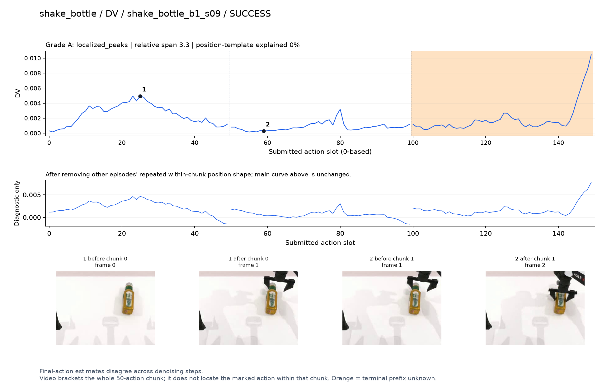
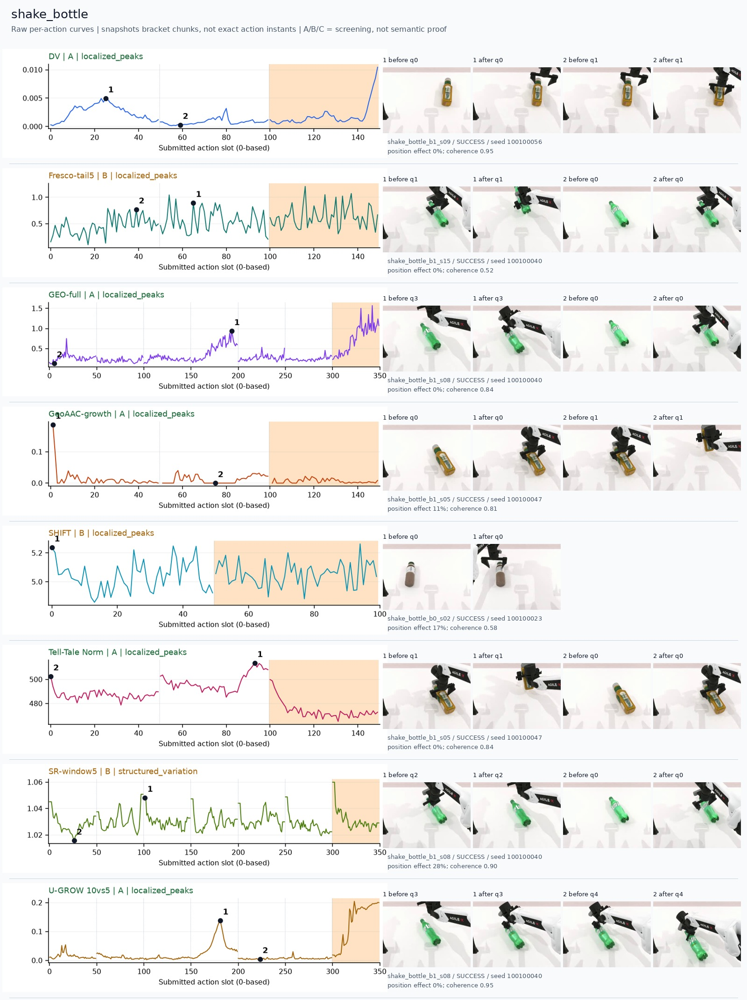
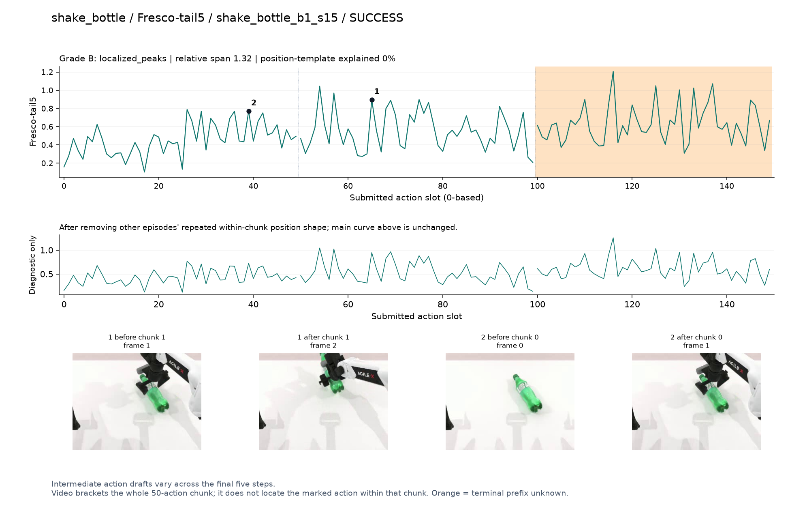
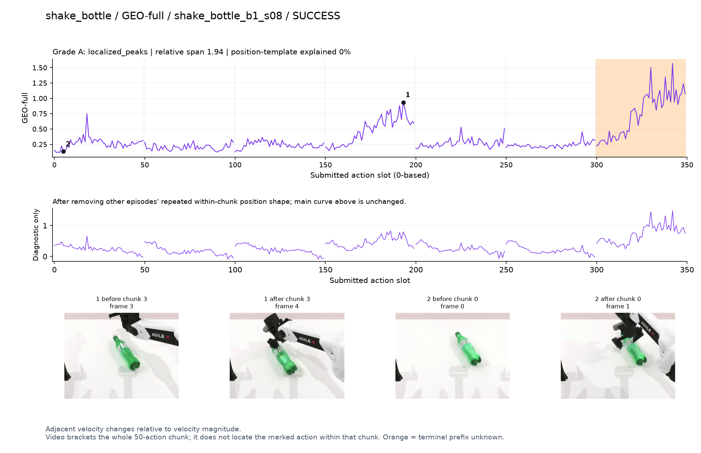
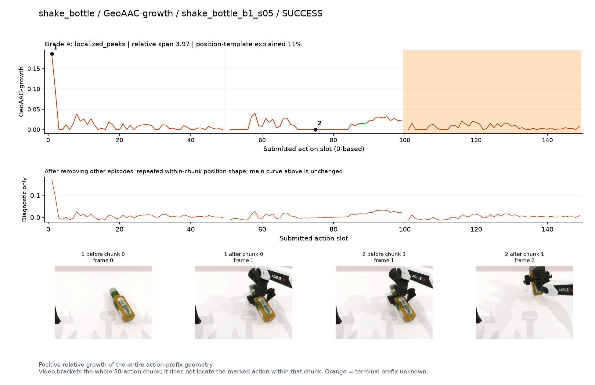
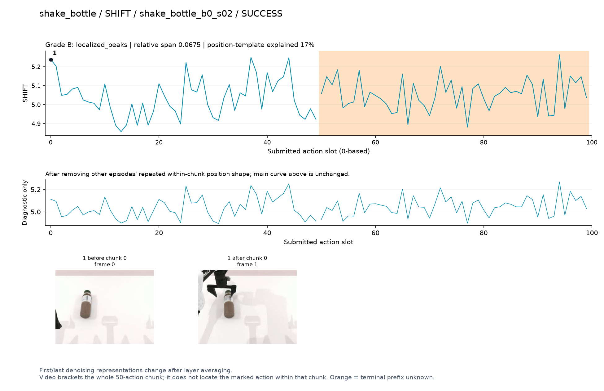
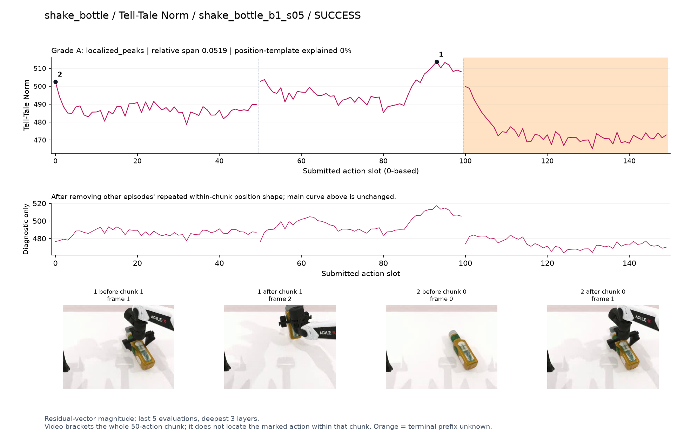
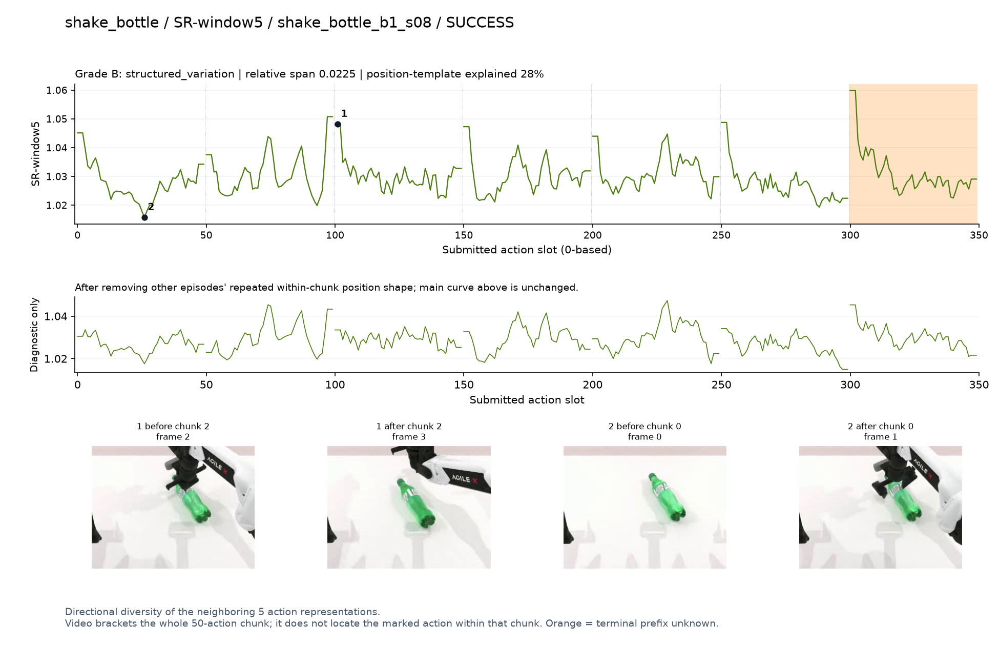
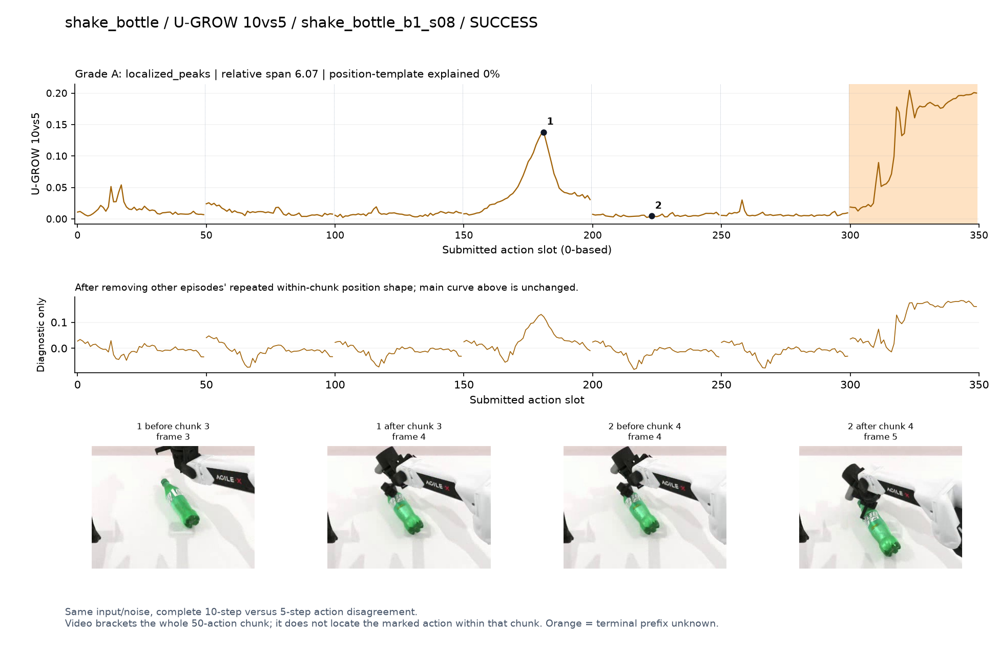

DV · A · localized_peaks
Final-action estimates disagree across denoising steps.
SVG · metadata
Only pre/post chunk frames were recorded. A visible stage transition is a candidate explanation, not proof of a contact instant. Main plots preserve every action score.
人工看图复核：dv [candidate] 补充数据候选：q0接近瓶子有宽峰；该任务有重复种子，不计正式验收。
fresco [weak] 弱：逐动作抖动较密，未见可靠独立事件对应；全数据与噪声到最终动作距离高度相关。
geo [candidate] 补充数据候选：q3重新接近横卧瓶子时高，并非摇动瞬间。
geoaac [weak] 弱：初始前缀强峰；种子重复的补充数据。
shift [weak] 弱：小幅抖动/阶段基线变化，未见可靠独立事件对应；路径长度混杂强。
norm [candidate] 补充数据阶段候选：q1提起瓶子时幅度高。
sr [weak] 弱：chunk边界反复上升；补充数据。
ugrow [candidate] 补充数据候选：q3重新接近瓶子时局部峰，终止段另有高值但不用。

Final-action estimates disagree across denoising steps.
SVG · metadata
Intermediate action drafts vary across the final five steps.
SVG · metadata
Adjacent velocity changes relative to velocity magnitude.
SVG · metadata
Positive relative growth of the entire action-prefix geometry.
SVG · metadata
First/last denoising representations change after layer averaging.
SVG · metadata
Residual-vector magnitude; last 5 evaluations, deepest 3 layers.
SVG · metadata
Directional diversity of the neighboring 5 action representations.
SVG · metadata
Same input/noise, complete 10-step versus 5-step action disagreement.
SVG · metadata